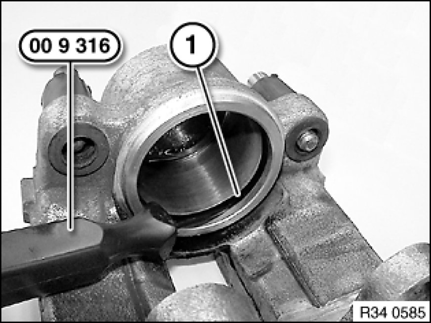

Overhauling Left or Right Front Brake Caliper (Brake Caliper Removed)
34 11 552 - Overhauling left or right front brake caliper (brake caliper removed)

Special tools required:
- 00 9 316 00 9 310 Assembly Wedges (Set in Plastic Case)

Note:
Use repair kit,
refer to BMW Parts Service.

Warning!
Risk of injury!
In the following work step, large forces occur at the brake calliper piston (up to more than
2800 N).

Important!
Do not grip piston with fingers - risk of trapping!
To protect piston, place a protective plate (e.g. hard wood or hard felt) in calliper recess.
Carefully force piston out through connection bore with compressed air.

Check guide sleeves (5), fitting repair-kit guide sleeve if necessary.
Press off dust sleeve (1).

Carefully remove seal (1) with special tool 00 9 316 00 9 310 Assembly Wedges (Set in Plastic Case).
Clean cylinder bores and parts with alcohol and dry with compressed air.
Thoroughly inspect cylinder bore, piston and flange surfaces. Machining of cylinders and pistons is not permitted.
Install new seal.
Installation:
Apply a light coat of Ate brake cylinder paste to cylinder bore, piston and seal,
Refer to BMW Service Operating Fluids.
Fit dust sleeve (1) in annular groove of piston (2).
Important!
Do not tilt piston.
Press piston into cylinder bore.
Evenly press dust sleeve onto brake calliper housing as far as it will go.
Installation:
The area between the dust sleeve and the brake calliper housing must be kept dry. It must not come into contact with Ate brake cylinder paste or brake fluid so as to ensure that the dust sleeve is perfectly seated.